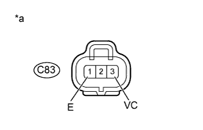

DTC P0107 Низкий уровень сигнала на входе цепи абсолютного / барометрического давления в коллекторе |
DTC P0108 Высокий уровень сигнала на входе цепи абсолютного / барометрического давления в коллекторе |
| Режим поездки при обнаружении DTC | Условие обнаружения DTC | Неисправный участок |
| Через 2 с после запуска двигателя повышайте частоту вращения коленчатого вала в течение 1 с | После запуска двигателя условие (a) выполняется в течение более 0,5 с (логика диагностирования за 1 поездку): (a) Напряжение датчика абсолютного давления в коллекторе составляет менее 0,1 В. |
|
| Режим поездки при обнаружении DTC | Условие обнаружения DTC | Неисправный участок |
| Через 2 с после запуска двигателя повышайте частоту вращения коленчатого вала в течение 1 с | После запуска двигателя условие (a) выполняется в течение более 0,5 с (логика диагностирования за 1 поездку): (a) Напряжение датчика абсолютного давления в коллекторе не ниже 4,8 В. |
|
| № DTC | Параметры из Data List |
| P0107 |
|
| P0108 |
| Давление во впускном коллекторе | Неисправность |
| Приблизительно 0 кПа |
|
| 250 кПа (1875 мм рт. ст., 73,8 дюйма рт. ст.) или более |
|
| 1.СНИМИТЕ ПОКАЗАНИЯ ПОРТАТИВНОГО ДИАГНОСТИЧЕСКОГО ПРИБОРА (АБСОЛЮТНОЕ ДАВЛЕНИЕ В КОЛЛЕКТОРЕ) |
Подсоедините портативный диагностический прибор к DLC3.
Включите зажигание (IG) и портативный диагностический прибор.
Войдите в следующие меню: Powertrain / Engine and ECT / Data List / MAP.
Снимите показания.
|
| ||||
|
| ||||
| 2.ПРОВЕРЬТЕ ЖГУТ ПРОВОДОВ И РАЗЪЕМ (ДАТЧИК АБСОЛЮТНОГО ДАВЛЕНИЯ В КОЛЛЕКТОРЕ - ЕСМ) |
Отсоедините разъем датчика абсолютного давления в коллекторе.
Отсоедините разъем ECM.
Измерьте сопротивление в соответствии со значениями, приведенными в таблице ниже.
| Контакты для подключения диагностического прибора | Условие | Заданные условия |
| C83-2 (PIM) - C91-5 (PIM) | Всегда | Менее 1 Ом |
| C83-3 (VC) - C91-12 (VCPM) | Всегда | Менее 1 Ом |
| C83-1 (E) - C91-16 (EPIM) | Всегда | Менее 1 Ом |
| Контакты для подключения диагностического прибора | Условие | Заданные условия |
| C83-2 (PIM) или C91-5 (PIM) - масса | Всегда | 10 кОм или более |
| C83-3 (VC) или C91-12 (VCPM) - масса | Всегда | 10 кОм или более |
Подсоедините разъем датчика абсолютного давления в коллекторе.
Подсоедините разъем ECM.
|
| ||||
| OK | |
| 3.ПРОВЕРЬТЕ НАПРЯЖЕНИЕ НА КОНТАКТАХ ЕСМ (КОНТАКТ VC) |
|  |
Отсоедините разъем датчика абсолютного давления в коллекторе.
Измерьте напряжение в соответствии со значениями, приведенными в таблице.
| Контакты для подключения диагностического прибора | Положение переключателя | Заданные условия |
| C83-3 (VC) - C83-1 (E) | Зажигание включено (IG) | 4,75 - 5,25 В |
| *a | Вид спереди разъема со стороны жгута проводов: (к датчику абсолютного давления) |
Подсоедините разъем датчика абсолютного давления в коллекторе.
|
| ||||
| OK | |
| 4.ЗАМЕНИТЕ ДАТЧИК АБСОЛЮТНОГО ДАВЛЕНИЯ В КОЛЛЕКТОРЕ |
Замените датчик абсолютного давления в коллекторе (Нажмите здесь).
| ДАЛЕЕ | |
| 5.ПРОВЕРЬТЕ, ВЫВОДИТСЯ ЛИ КОД DTC СНОВА |
Подсоедините портативный диагностический прибор к DLC3.
Удалите коды DTC (Нажмите здесь).
Выключите зажигание и подождите не менее 30 с.
Выключите портативный диагностический прибор.
Запустите двигатель.
Запустите двигатель, подождите 2 с и увеличьте частоту вращения коленчатого вала двигателя в течение 1 с.
Включите портативный диагностический прибор.
Убедитесь, что DTC не выводится снова.
Войдите в следующие меню: Powertrain / Engine and ECT / Utility / All Readiness.
Введите DTC P0107 или P0108.
Проверьте результат проверки DTC.
| Результат | Следующий шаг |
| ABNORMAL | А |
| NORMAL | B |
|
| ||||
| А | |
| 6.ЗАМЕНИТЕ ECM |
Замените ECM (Нажмите здесь).
|
| ||||
| 7.ОТРЕМОНТИРУЙТЕ ИЛИ ЗАМЕНИТЕ ЖГУТ ПРОВОДОВ ИЛИ РАЗЪЕМ |
Отремонтируйте или замените жгут проводов или разъем.
| ДАЛЕЕ | |
| 8.ПРОВЕРЬТЕ, УСТРАНЕНА ЛИ ДОЛЖНЫМ ОБРАЗОМ НЕИСПРАВНОСТЬ |
Подсоедините портативный диагностический прибор к DLC3.
Сбросьте коды DTC (Нажмите здесь).
Выключите зажигание и подождите не менее 30 с.
Выключите портативный диагностический прибор.
Включите зажигание (IG) на 3 с и включите портативный диагностический прибор.
Запустите двигатель, подождите 2 с и увеличьте частоту вращения коленчатого вала двигателя в течение 1 с.
Убедитесь, что DTC не выводится снова.
Войдите в следующие меню: Powertrain / Engine and ECT / Utility / All Readiness.
Введите DTC P0107 или P0108.
Убедитесь, что для параметра STATUS (состояние) отображается значение NORMAL (нормальное). Если значением параметра STATUS является INCOMPLETE (не завершено) или UNKNOWN (нет данных), увеличьте частоту вращения коленчатого вала двигателя на 1 мин, а затем дайте двигателю поработать на холостом ходу в течение 5 мин.
| ДАЛЕЕ | ||
| ||